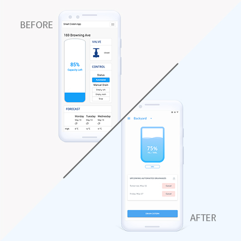
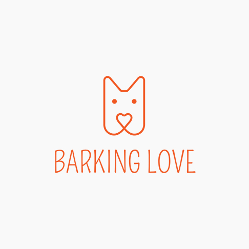

-

Smart Cistern
Heuristic Evaluation, UX Research & Redesign
In this client project, the goal was to redesign the Smart Cistern app MVP employing a user-centric approach – through interviews, task analysis, usability testing and heuristic evaluations of the existing design.
Read More
-

Thunderwear
UX Research & Design
Thunderwear helps you optimize your morning routine and be prepared to face the elements by showing you what to wear according to the current weather. The goal of this project was to validate the product hypothesis and design an MVP.
Read More
-

Soft Skills & Online Learning
UX Research
This research project for eCampus Ontario explored the role of online learning in supporting soft skills. The goal was the creation of an evaluation framework that can guide the effective use of online materials in supporting soft skills considered essential by design employers.
Read More
-

Barking Love
Branding & Web Design
Barking Love is a company that offers Pet Services in Toronto. Being a dog lover myself, I was very excited to take on the challenge to redesign their brand and create a clean and easy-to-use website that will be launched early this summer.
Read More
-

Nature's Bystanders
Interactive Installation
Nature’s Bystanders is an interactive installation designed as an exploration of trees as passive observers to societal change.
Read More